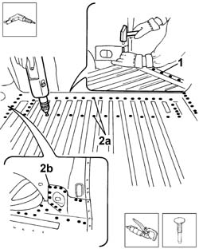
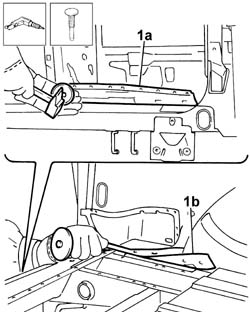
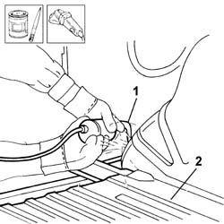
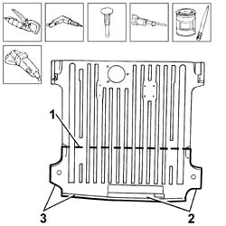
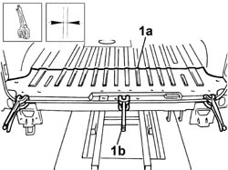
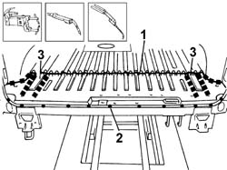

7210B56 R.R. BOOT/LOAD CARRYING COMPARTMENT FLOOR (partial rear operation)
- Path
- Procedures > 72 PANELS AND FRAMES > 7210 REMOVING-REFITTING > 7210B structure elements-central and rear part > 7210B56 R.R. BOOT/LOAD CARRYING COMPARTMENT FLOOR (partial rear operation)
- Kind
- repair procedure (removal / refitting; the operation number is the code)
- Applies to
- all engines; all production periods
- Interactive page
- https://sloeber94.github.io/elrnDB-fDbl/en/#/2585256
Applies to: all engines; all production periods
 Removing
Removing
 Refitting
Refitting1. Use a hammer and suitable drift to reduce the weld spots along the area of contact with the rear beam.
2. Use a drill to reduce the weld spots (2a) around the edge and spots (2b) located to the side of the floor trim part to be replaced.

Applies to: all engines; all production periods
1. Use a hammer and chisel to separate the floor trim from the area of contact with the underlying beam (1a) and along both side panel edges (1b).

Applies to: all engines; all production periods
Straighten the edges of the panel.
1. Use a grinding wheel to remove the weld spot residues.
2. Apply electro-galvanizing paint to the parts which have been ground.

Applies to: all engines; all production periods
1. Measure and trace the cutting line on the replacement part.
Using a power saw, cut along the cutting line traced previously.
2. Use a rotary brush to remove the corrosion-proofing around the edge of the parts.
3. Apply electro-galvanized paint to the edges in contact with the vehicle.

Applies to: all engines; all production periods
Refitting
Removing1. Correctly position the replacement part (1a) on the bodyshell and secure it using self-locking clamps (1b).
Check it is properly aligned.

Applies to: all engines; all production periods
1. Seam weld along the joint between the part and the floor trim.
2. Use a spot welder to weld the profile of the replacement part in the areas of contact with the rear beam.
3. Fill weld along the area of contact with the underlying rails.

Applies to: all engines; all production periods
Check that the welded parts are correctly positioned.
Level the spot welds using a disc grinder.
Clean the areas affected by the welding.
Apply electro-galvanizing paint to the parts which have been ground.